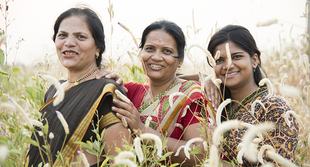

मैंने अपनी वेरिकोज़ नसें कैसे ठीक कीं
कौन महान है? मैं महान हूँ! मेरा परिवार मेरी दादी की कोई मदद नहीं कर सका और हम चाहे जो कर लें, हम अपनी दादी के कष्ट दूर नहीं कर पाए । वो चल भी नहीं पाती थीं। इसके पहले तो वे ठीक थीं, अच्छे से चलती-फिरती थीं, सैर पर जाती थीं, खाना बनाती थीं, या दुकान से दौड़ कर समान ले आती थीं।
हम लोगों ने अपनी दादी की बहुत देखभाल की। हमारी राय में उन्हें अपने स्वास्थ्य के लिए ज़्यादा चलने-फिरने की जरूरत थी बस! लेकिन जब वो खुद चलने-फिरने में समर्थ हो कर सब कर सकीं तो बड़ी खुश हुई थीं । पार्क में, घर में, और शहर में घूमने जाना।
उनकी वेरिकोज़ नसों के कारण वे अपना जीवन ठीक से नहीं जी पाती थीं! वो पहले बहुत सक्रिय रहती थीं, लेकिन पिछले कुछ सालों से वो घर पर ही बैठी रहती थीं, हमेशा अपने पैरों को धोकर उनपर कंप्रेस लगाती रहती थीं ।
उनके पैरों के आस-पास नीली और घनी नसें साँप जैसी लिपटी रहती थीं। वे बड़ी खराब दिखती थीं, लेकिन मैंने कभी सोचा नहीं था कि ये इतनी खतरनाक हो सकती हैं!
इलाज के पहले और बाद की फोटो
पिछले महीने एक रक्त-रोग विशेषज्ञ (फ्लेबोलॉजिस्ट) ने ऑपरेशन की सलाह दे डाली। हम उससे सहमत नहीं थे और एक दूसरे डॉक्टर के पास गए। उसने भी यही कहा कि दादी की वेरिकोज़ नसें बिगड़ गई हैं और जानलेवा हो चुकी हैं! पहली डीटैच थ्रोम्बस से ही उनका हृदय काम करना बंद कर सकता था। वहीं, उनकी उम्र के कारण एनेस्थीसिया भी खतरनाक था क्योंकि इससे भी मौत हो सकती है।
हमें अब जाकर उनकी समस्या की गंभीरता का अंदाज़ा लगा था और हम दादी को ठीक करने के दूसरे तरीके खोजने लगे, हम हर कीमत पर ऑपरेशन से बचना चाहते थे।
लेकिन मेरी दादी भी किसी तानाशाह से कम नहीं हैं। पहले तो उन्होने किसी भी तरह की दवाई लेने से मना कर दिया, और बोलीं, इससे उनका लीवर खराब हो जाएगा। उन्हें एक वैद्य ने आयुर्वेदिक दवाएँ लगाने को कहा और उन्होने सिर्फ यही दवा लगाई। इससे कुछ होने वाला तो था नहीं और पूरे घर में बदबू अलग आती थी! ऐसा रिज़ल्ट तो पैरों पर टूथ-पेस्ट लगाने से भी आ सकता था!
लेकिन मैंने चालाकी से दादी के आयुर्वेदिक नुस्खे की ट्यूब में वेरिकोज़ नसों को ठीक करने का एक मॉडर्न नुस्खा भर दिया।
इसलिए मैंने आयुर्वेदिक क्रीम के ट्यूब को एक जार में खाली कर दिया और उसकी जगह "नया आयुर्वेदिक नुस्खा" भर दिया।
दादी उसे आयुर्वेदिक मानकर लगाती रहीं और उन्हें पता ही नहीं चला। एक हफ्ते बाद मैंने उनसे पूछा भी नहीं कि उनकी क्रीम से उन्हें फायदा हो रहा है या नहीं। वो सुबह से लेकर शाम तक खेत में काम करती थीं और पूरा दर्द बंद हो गया था। और प्रगति बाहर से भी नज़र आने लगी थी: नसों की सूजन भी काफी कम हो गई थी ।
दो हफ्तों में तो डॉक्टर भी कहने लगे कि अब खतरे की कोई बात नहीं है और ऑपरेशन की कोई जरूरत नहीं है ।
लेकिन मेर मम्मी और मैं भी दादी जैसी परेशानी का शिकार होने से डरे रहते थे, इसलिए हमने लेना शुरू कर दिया ताकि पहले से रोकथाम हो सके। इससे हमारे पैर बहुत अच्छे हो गए हैं। दिन भर हाई-हील पहनने के बाद भी इससे पूरी टेंशन दूर हो जाती है! मैं तो सोच भी नहीं सकती कि के बिना कैसे रहूँगी। और मैं आपको इसे खरीदने की लिंक भी बताऊँगी ताकि आप भी इसे ऑर्डर कर सकें। मुझे तो अच्छा लगेगा!